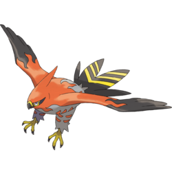

Physical Sweepers
Mega Salamence
Mega Salamence can function as both a physical and special sweeper, but its attack is slightly higher than its special. It is a good sweeper because not only are its base stats high, it can be boosted further with Dragon Dance, along with the Aerilate ability. Although it is a Mega, Mega Salamence can become a powerful sweeper with the right moves and investments. For physical sweepers, IVs should only exculde Special Attack, and EVs should be invested in Attack and Speed.
| Move 1: Dragon Claw/Outrage | Move 2: Facade/Return |
| Move 3: Earthquake/Crunch | Move 4: Dragon Dance |
Talonflame
Talonflame is a very popular physical sweeper because of its signature ability, Gale Wings. With Gale Wings and its high Speed, its Brave Bird gains one priority, as well as its Roost, and it can outspeed foes also using priority. Because of the priority, Talonflame must be Adamant, and invested in Attack. Speed should also be raised in case of the need to Swords Dance or Flare Blitz. The items can vary: Choice Band to power up and spam Brave Bird, Life Orb, or Sharp Beak.

| Move 1: Brave Bird | Move 2: Flare Blitz |
| Move 3: Swords Dance | Move 4: Roost |
Excadrill

Excadrill possesses high enough Attack to become a very effective physical sweeper, but its Speed is not the most reliable. The best way to improve Speed is by having a Jolly nature, but Adamant is acceptable as well. EVs should be invested the same way as the previous two, and the item can vary. Speed can be boosted by Choice Scarf, but items to buff Attack should be Choice Band or Life Orb. Another possibility is Air Balloon to cover the Ground weakness.
| Move 1: Earthquake | Move 2: Iron Head |
| Move 3: Rock Slide | Move 4: Swords Dance/Rapid Spin |